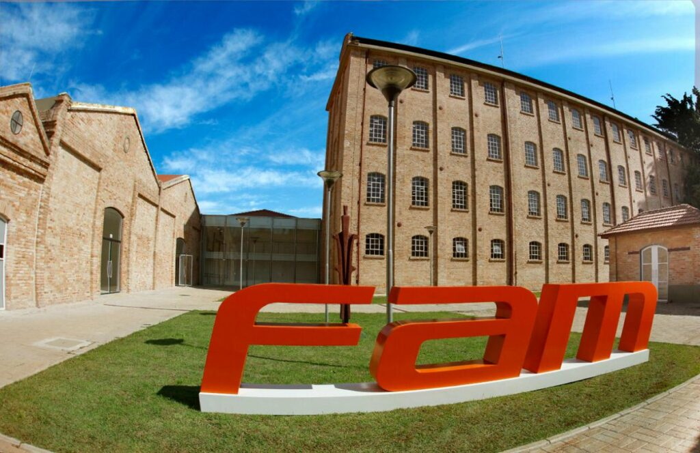

Campus Mooca
Quando a Fam Universidade para todos foi inaugurada a principal preocupação era proporcionar uma experiência única para nossos alunos.
Desde 1980 a Fam Universidade para todos encanta os alunos da cidade de São Paulo.
Muitos alunos se formaram ao longo dos anos,estamos de segunda-feira á sexta-feira ministrando aulas com diversidade de cursos.
Em breve teremos um Bicicletário Inteligente na Universidade campus mooca, para atender nossos alunos.
O Bicicletário Inteligente é coisa única e inovadora em Universidade no Brasil.
